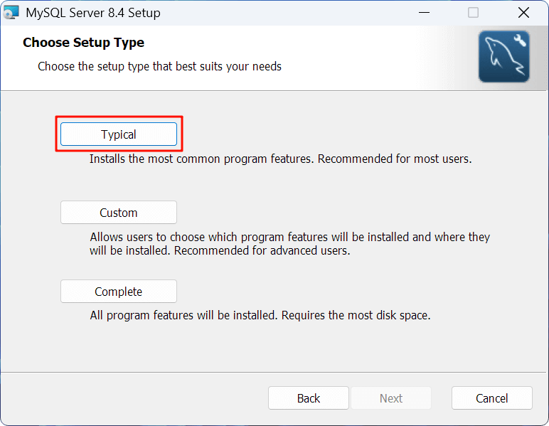
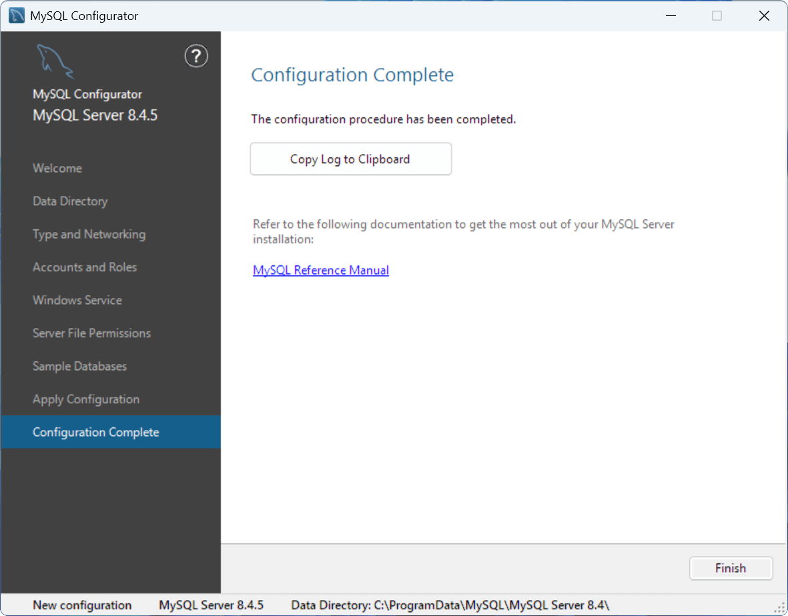

MySQL 安装与配置指南
访问 MySQL Community Downloads 官网，选择最新的 8.4.x LTS（长期支持）版本和 Microsoft Windows 平台，下载 MSI Installer 安装程序

如果下载提示要求登录或注册，可以点击下方蓝色文字链接跳过，直接开始下载

安装 MySQL 服务器¶
打开 MySQL 安装程序，点击 "Next" 开始配置

勾选同意最终用户许可协议，点击 "Next" 继续

选择安装类型，一般选择 "Typical"（典型）即可，其他组件可以在需要时再进行安装
不建议更改默认安装路径
如果选择 "Custom" 可以更改安装路径，但为了避免路径问题并方便故障排查，不建议更改默认安装路径！
- MySQL 及相关组件的默认安装目录（basedir）：
C:\Program Files\MySQL - MySQL 相关数据文件的默认存放目录（datadir）：
C:\ProgramData\MySQL

点击 "Install" 开始安装 MySQL Server

安装完成后，勾选 "Run MySQL Configurator"，并点击 "Finish"

配置 MySQL 服务器¶
使用 "MySQL Configurator" 配置 MySQL 服务器，点击 "Next" 继续
note "运行 MySQL Configurator"
开始菜单找到（或搜索）MySQL 8.4 Configurator 手动运行

数据目录（Data Directory）¶
设置 MySQL 服务器管理的数据存储目录，保持默认路径即可
为了避免路径问题并方便故障排查，**不建议更改默认数据路径！**
- **MySQL 数据库等数据文件存放目录（datadir）**：`C:\ProgramData\MySQL`
 ¶
¶
类型与网络（Type and Networking）¶
保持默认端口
3306/33060 端口。如果更改默认端口，后续连接数据库时需显式指定端口。
类型与网络选项说明 [^1]
Server Configuration Type（服务器配置类型）：根据主机用途预分配 MySQL 实例的系统资源（CPU/内存/并发连接数等）。
Development Computer：不限于 MySQL 开发的一般计算机，MySQL 将占用最小内存。Dedicated Computer：专用于运行 MySQL 数据库的服务器，MySQL 将充分利用所有可用内存。Manual：保留默认配置文件值，如果需要进行任何更改，必须手动编辑配置文件更新数值。
Connectivity（连接方式）：MySQL 服务器支持多种连接方式，包括 TCP/IP、Named Pipes 和 Shared Memory。
Named Pipes：基于命名管道的进程间通信（IPC）机制，仅限本地连接，比 TCP/IP 开销更低。Shared Memory：通过内存共享实现进程间通信，仅限本地连接，速度最快但安全性最低。
Advanced Configuration（高级配置）：勾选后显示服务器 ID、表名大小写规则和日志等高级选项。
账户与角色（Accounts and Roles）¶
在上方设置 Root 用户密码，下方的 MySQL User Accounts（MySQL 用户账户）无需配置
密码强度与重置密码
MySQL 用户密码要求最少为 4 个字符，建议使用数字+大小写字母+特殊字符等长字符串以提高密码强度。如果忘记 Root
用户密码，可以参考 MySQL 重置 root 密码（菜鸟教程） 进行重置。
账户与角色选项说明 [^2]
Root 用户是数据库系统中的超级用户，拥有最高权限，可以对数据库实例进行管理和配置，包括创建用户和管理权限，数据库和表的创建、修改和删除，管理数据库实例和配置等。
MySQL User Accounts（MySQL 用户账户）用于添加数据库管理员、开发者或只读用户等身份角色，并限制特定用户对数据库的操作范围，以确保数据库的安全性和合规性。

Windows 服务（Windows Service）¶
默认勾选 Configure MySQL Server as a Windows Service（设置 MySQL 服务器作为 Windows 服务）即可，其中
"Windows Service Name"（Windows 服务名称）无需修改，其他选项默认即可
Windows 服务选项说明 [^3]
在 Windows 平台上，MySQL 服务器可以作为操作系统管理的服务运行，并配置为开机时自动启动，持续在后台运行。默认以
Standard System Account（标准系统账户）身份启动，如果需要配置权限，可以勾选 Custom User（自定义用户）。
如果发现无法连接至 MySQL 服务器，应当首先检查 MySQL 服务（如 MySQL84）是否已启动

服务器文件权限（Server File Permissions）¶
默认选择第一项，将 MySQL 文件夹及文件的完全访问权限仅授予运行 Windows 服务的用户和管理员组
服务器文件权限选项说明 [^4]
访问权限涉及 MySQL 服务器数据、配置和日志等文件（默认位于 C:\ProgramData\MySQL\MySQL Server 8.4），为了保护数据安全，此权限通常仅授予运行
Windows 服务的用户和管理员组，普通用户无权访问和修改。

示例数据库（Sample Databases）¶
根据需要选择是否创建示例数据库，可选 Sakila 和 World 数据库，以便快速上手和练习
示例数据库简介
-
Sakila 数据库
- 一个模拟 DVD 租赁商店的完整业务数据库
-
World 数据库
- 包含国家/城市/语言信息的简化全球数据集
- 仅 3 张核心表（country/city/countrylanguage）

应用配置（Apply Configuration）¶
配置完成后，点击 "Execute" 应用配置更改，等待所有项目配置完成
配置更改遇到问题或错误？
应用配置时，如果遇到某些问题或错误导致中断，请根据右侧 Log（日志）栏中的报错信息，使用网络搜索可能的解决方案。
例如，在 Starting the server 步骤出错可能是由于端口（3306）被占用导致无法正常启动 MySQL 服务，可以尝试找出并结束占用此端口的进程后重新应用配置。
如果计算机名为特殊字符（如中文），建议更改为 ASCII 字符（如纯英文），否则在应用 MySQL 配置时可能会发生错误（提示 file 'xxx-bin.index' not found）。
**常见安装错误及解决方案可参考**：[常见安装错误](faq.md)


配置完成（Configuration Complete）¶
执行所有应用配置步骤后，安装和配置完成！

设置 MySQL 环境变量¶
设置 MySQL 系统环境变量
为了能够使用 CMD 和 PowerShell 等终端（也可以使用 MySQL Command Line Client）连接至 MySQL
路径（可执行文件目录）添加至系统环境变量中。
MySQL Server 默认的 bin 目录路径为：C:\Program Files\MySQL\MySQL Server 8.4\bin
在 Windows 搜索栏搜索 "环境变量"，并点击 "编辑系统环境变量"，打开系统环境变量配置

在 "系统属性 > 高级" 页面下点击 "环境变量"，并双击打开在 "环境变量 > 系统变量" 下的 "Path" 变量
在右上方点击 "新建" 变量，并将值设为 MySQL Server 的 bin 目录路径

为了验证是否已正确配置，可以在终端中执行下列命令，如果提示如下版本信息则说明配置成功
PS> mysql -V # 或 mysql --version

连接 MySQL 服务器 [可选]¶
打开终端，输入并执行下列命令，并输入 Root 用户密码进行登录
PS> mysql -u root -p # 或 mysql --user root --password
连接 MySQL 服务器命令参数说明
-h,--host：指定服务器地址，默认为localhost-P,--port：指定服务器端口，默认为3306-u,--user：指定登录用户-p,--password：指定用户密码

如果提示如下信息则说明登录成功，可以在其中输入 MySQL 语句进行执行
常用 MySQL 语句
SHOW DATABASES; -- 查看所有数据库
CREATE DATABASE db_name; -- 创建数据库
USE db_name; -- 切换数据库
DROP DATABASE db_name; -- 删除数据库
ALTER DATABASE db_name CHARACTER SET utf8mb4; -- 修改数据库字符集
SHOW TABLES; -- 查看当前数据库所有表
CREATE TABLE table_name (id INT PRIMARY KEY); -- 创建表
DESC table_name; -- 查看表结构
ALTER TABLE table_name ADD COLUMN name VARCHAR(50); -- 修改表结构
DROP TABLE table_name; -- 删除表
SELECT * FROM table_name LIMIT 10; -- 查询数据（前 10 条）
INSERT INTO table_name VALUES (1, 'data'); -- 插入数据
UPDATE table_name SET column1=value WHERE condition; -- 更新数据
DELETE FROM table_name WHERE condition; -- 删除数据
STATUS; -- 查看服务器状态
EXIT; -- 退出 MySQL 客户端
-
其他常用 MySQL 语句可参考：MySQL 命令大全 | 菜鸟教程
-
所有 MySQL 语句及用法详见官方文档：MySQL :: MySQL 8.4 Reference Manual :: 15 SQL Statements

[^1]: MySQL :: MySQL Installer Guide :: 4.1.1 Type and Networking [^2]: MySQL :: MySQL Installer Guide :: 4.1.3 Accounts and Roles [^3]: MySQL :: MySQL Installer Guide :: 4.1.4 Windows Service [^4]: MySQL :: MySQL Installer Guide :: 4.1.5 Server File Permissions